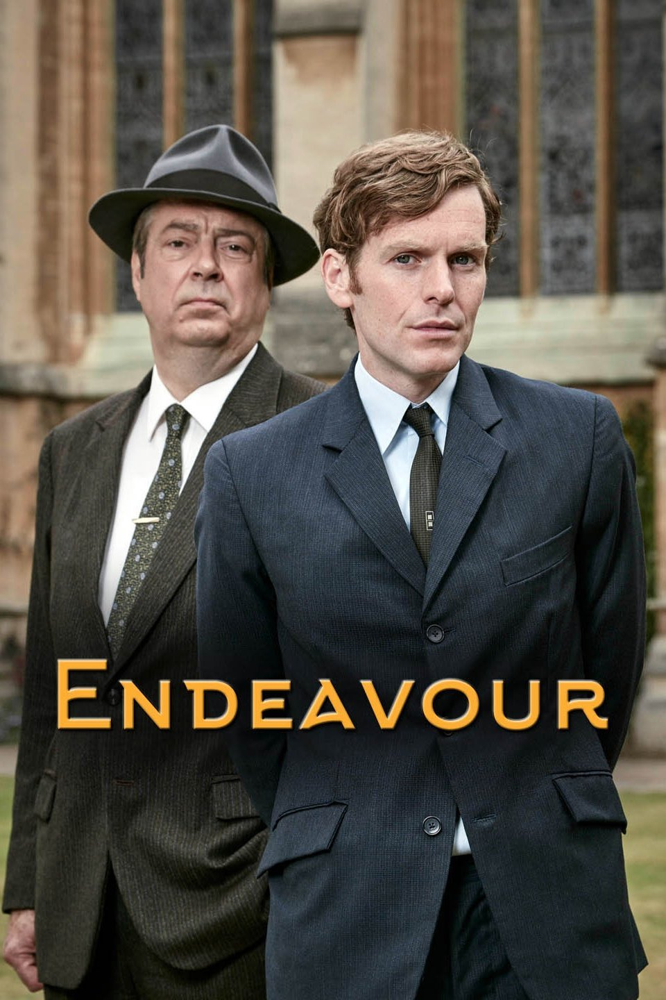

Endeavour (Aired 2013-)
Rating: 8.6/10
Age Restriction: TV-12
Set in the 1960s, the show follows Endeavour Morse in his early years as a police constable. Working alongside his senior partner DI Fred Thursday, Morse engages in a number of investigations around Oxford.
Creator: Russell Lewis
Cast
Shaun Evans as .... DC Endeavour Morse
Roger Allam as .... DI Fred Thursday
Jack Laskey as .... DS Peter Jakes
Anton Lesser as .... Chief Superintendent Bright
Sean Rigby as .... PC Jim Strange
James Bradshaw as .... Dr. Max DeBryn
Caroline O'Neill as .... Win Thursday